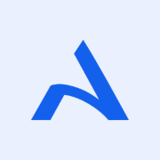
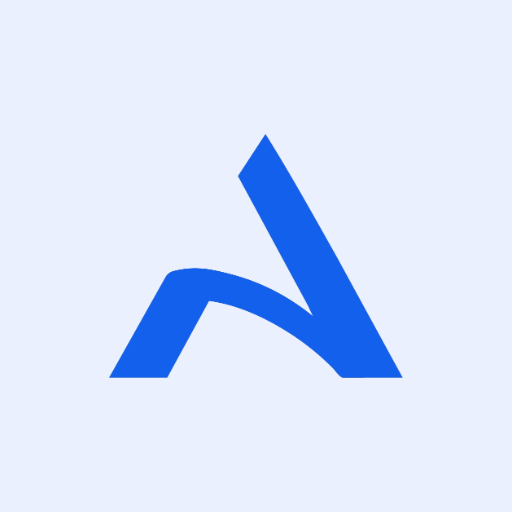
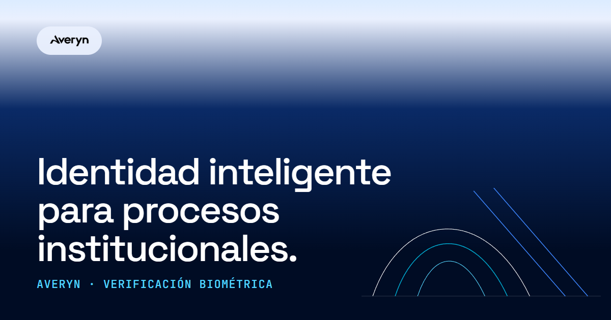

Kit de ilustración: los arcos
Averyn no usa mascotas ni escenas: una sola figura, los arcos sobre el horizonte, cambia de estado para contar qué pasa. Solo trazos de 1.5–2 px, sin rellenos, con la paleta de marca. Cada pieza se puede copiar o descargar como SVG.
- Una ilustración por pantalla, centrada o anclada a una esquina.
- Trazos con
vector-effect: non-scaling-strokepara que no engorden al escalar. aria-hidden="true"cuando es decorativa; título y descripción solo si comunica algo que el texto no dice.- Fondo claro con trazos navy/azul/cian; fondo navy con trazos blanco/cian-glow.
- Rellenar los arcos, añadir sombras o degradados.
- Rotar, deformar o cambiar el orden de los colores de los arcos.
- Usar la ilustración de error para estados que no son errores.
- Animar en bucle: el dibujo ocurre una sola vez y respeta
prefers-reduced-motion.
Estados vacíos con arcos
Estructura fija: ilustración (96 px de alto), titular que dice qué falta, una frase con el siguiente paso y, si hay una salida, un único botón. Nunca "No hay datos".
Favicons e imagen para compartir
Generados a partir del isotipo oficial (averyn-logo-blue) y la figura de arcos; nada redibujado. Los archivos están en docs/ds/assets/, listos para copiar al frontend cuando se decida.






Imagen para compartir Open Graph · 1200 × 630

<link rel="icon" type="image/png" sizes="32x32" href="/assets/favicon-32.png"> <link rel="icon" type="image/png" sizes="48x48" href="/assets/favicon-48.png"> <link rel="apple-touch-icon" href="/assets/apple-touch-icon.png"> <meta name="theme-color" content="#000C24"> <meta property="og:type" content="website"> <meta property="og:title" content="Averyn — Identidad inteligente"> <meta property="og:description" content="Verificación biométrica para procesos institucionales."> <meta property="og:image" content="https://TU-DOMINIO/assets/og-image.png"> <meta name="twitter:card" content="summary_large_image">
La URL de og:image debe ser absoluta y pública. El titular de la imagen es el mismo del hero de la landing; si cambia uno, cambia el otro.
Correos transaccionales
Tres plantillas de producción: invitación, verificación de correo y recuperación de contraseña. HTML de tablas con estilos en línea (lo que realmente funciona en Gmail, Outlook y Apple Mail), versión en texto y variables {{así}}. Los archivos viven en docs/ds/emails/.
Versión en texto plano
| Regla | Por qué |
|---|---|
| Tablas y estilos en línea, 600 px | Los clientes de correo eliminan <style> o ignoran flex/grid. Se prueba en Gmail, Outlook (escritorio y web), Apple Mail y móvil. |
| Fuentes con respaldo a Arial | Space Grotesk, Inter y JetBrains Mono no existen en la mayoría de clientes: el diseño debe sostenerse sin ellas. |
| Un solo botón principal + enlace en texto | Si el botón no carga (imágenes o estilos bloqueados), la persona aún puede copiar el enlace. |
Logo con URL absoluta y alt | Los correos no cargan archivos locales; sin imagen, "Averyn" sigue leyéndose. Poner {{logo_url}} a un PNG alojado en un dominio propio. |
| Sin datos sensibles | Nunca incluir contraseñas, plantillas biométricas ni el resultado de una verificación. El código de un solo uso vence en 10 minutos. |
| Modo claro fijado | color-scheme: light only: los colores están pensados y contrastados solo para fondo claro (botón 5.4:1). |
| Texto de seguridad siempre | Cada correo dice qué hacer si la persona no lo solicitó y que Averyn nunca pide códigos por teléfono. |
Estilos de impresión: actas y constancias
Los documentos oficiales (constancias de verificación, actas electorales, reportes) se imprimen o se guardan en PDF desde el navegador. print.css da formato A4 con tinta mínima, tablas que no se parten y pie con número de página.
- A4 con márgenes de 18/16/20 mm; pie "Página X de Y" y marca de documento verificable.
- Sin fondos de color: los estados llevan texto y símbolo (✓ / ✕), no dependen de la tinta.
- Encabezados sin huérfanos; tablas y firmas no se parten entre páginas; la cabecera de la tabla se repite.
- Los enlaces externos imprimen su dirección entre paréntesis.
- Se oculta todo lo interactivo (
.no-print, navegación, botones).
- Folio único, fecha y hora de emisión y quién la emitió.
- Qué se verificó y el resultado en palabras (no solo un icono).
- Espacio para firma y un código QR de validación.
- Una nota de privacidad: el documento no incluye datos biométricos ni el sentido de un voto.
<link rel="stylesheet" href="print.css"> <!-- carga siempre; las reglas de impresión viven en @media print --> <main class="pr-doc"> <header class="pr-head">…</header> <dl class="pr-meta">…</dl> <table class="pr-table">…</table> <div class="pr-sign">…</div> </main>
Mapa de entregables
| Entregable | Ubicación | Estado |
|---|---|---|
| Design system en un solo HTML | docs/averyn-design-system-horizonte.html | Listo para compartir |
| Design system por páginas | docs/design-system.html + docs/ds/*.html | Listo |
| Páginas de error (404, 403, 500, offline, mantenimiento) | averyn-frontend/*.html + assets/css/error.css | En el frontend |
| Favicons e imagen social | docs/ds/assets/ | Pendiente de copiar al frontend |
| Correos transaccionales | docs/ds/emails/ | Pendiente de integrar al servicio de correo |
| Estilos de impresión | docs/ds/print.css | Pendiente de usar en actas reales |
| Tokens W3C | docs/ds/tokens.json | Generado |
| Modo nocturno | — | Fuera de alcance por ahora |
| Gráficos, patrones biométricos y plantillas en el frontend | — | Solo documentados; se implementan con datos reales |
Para regenerar todo: python docs/ds/src/tokens_export.py, python docs/ds/src/emails.py, python docs/ds/src/build.py y, por último, python docs/ds/src/bundle.py (produce el HTML único).